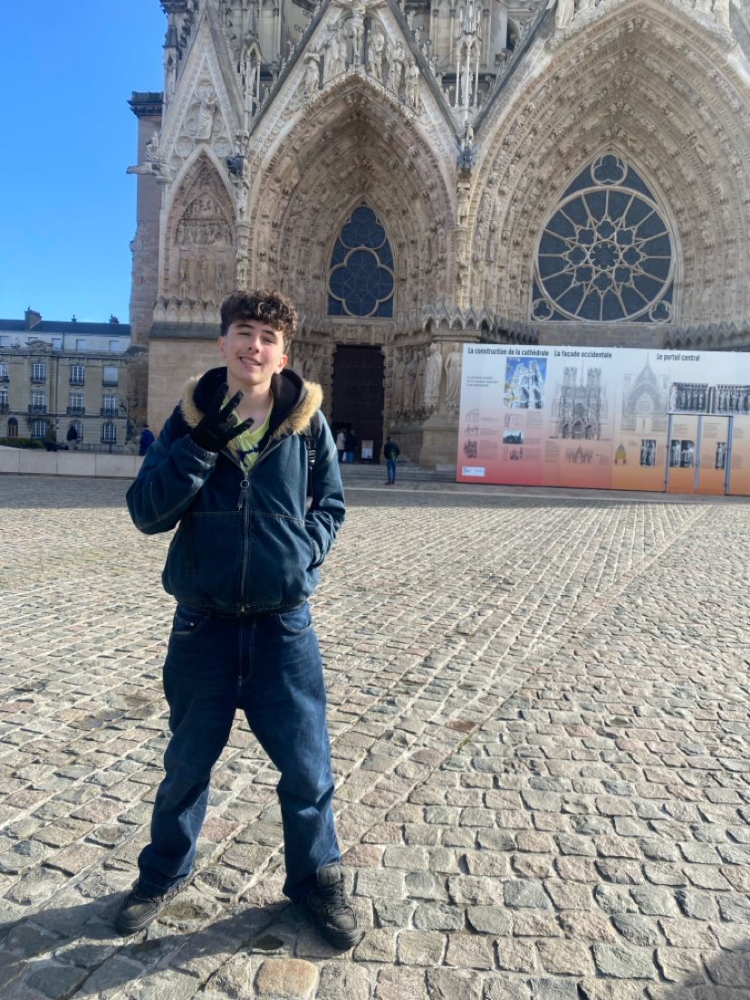

Je suis un éleve dinamique et investi qui porte toujours un grand interet à ce qu'on lui apprend, je suis poli et bien élevé. Je suis tres extraverti et n'ai aucun mal à parler à des gens que je ne connais pas. J'ai de grandes qualitées humaines et j'adore faire des rencontres
Eleve de seconde j'aimerais un métier scientifique et je cherche un stage qui m'aiderait à m'orienter. J'aimerais dans le futur intégrer une classe préparatoire de commerce ou d'ingénieurie
Pendant mon stage je n'ai pas fait beaucoup de chose, j'ai surtout passé le ballai
Je n'ai encore un fois pas fait grand chose